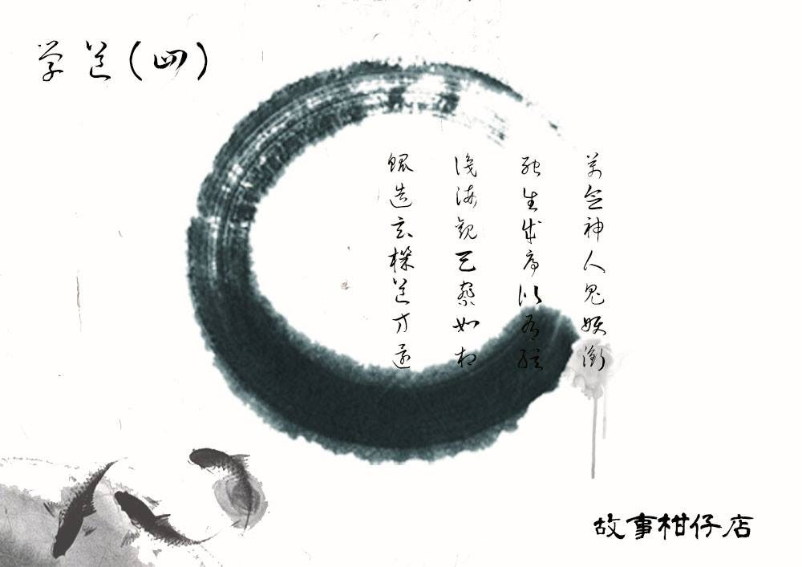

玄墨行者．學道（四）

「戰國時，天下學者不歸楊則歸墨，尤以墨者行俠天下，無人不知，其機關智識左右大勢，或言秦國弓弩之巧、刀劍之韌、盔甲之精，皆出自秦中墨者，助始皇數十年間平定天下。
秦浩蕩統一，墨者卻銷聲匿跡，世人不解，或謂秦人寡情，兔死狗烹，已趕盡殺絕墨者，以避其知其器落入外人之手；或說墨者認天下既定，卸甲歸於士工農中，不問世事、不操舊業。
其實不然。
墨家末位鉅子遁世前，為聚他國餘下墨者，與三五從者疾行山間，欲會於函谷關，途中憩於一亭，遇兩老弈棋，各執黑白，黑棋者面貌枯槁，身形痀僂；白棋者白眉飄飄，仙骨凜然。
鉅子在旁觀之，黑白棋子竟忽而成馬，忽而成士，相互廝殺，鉅子迷而入局，乍見自身站在棋盤正中，兩棋殺將過來，刀劍加身之際，黑白棋竟又化為各式妖魔，將盤中鉅子食而殆盡。
半响之後，鉅子恍惚醒來，三五從者皆倒地昏睡，兩老在旁坐而待之，白眉者見鉅子醒，言：「天下分合，亂而無道，非汝一人一派可治。」
痀僂者哀惜而言：「哀哉我墨者，救遍人世，卻無智光可見真實。」
鉅子欲言，白眉者先道之：「棋盤中事，為天下亂根所在。人心生妖鬼，而妖鬼又亂人心。人心之災，儒道或可正之，但妖鬼之禍，唯有墨者能平。今日見之，實為翟、吾相託，望墨者能續而匡正天下。」
鉅子不解欲問，痀僂者又先言：「今吾倆將《渾天機關書》、《神異術》與你，望你繼我治世博愛之業。」
白眉者又云：「吾另有三事告汝，務必守之。一汝回之後，請潛於山林暗處，廣集有志之士，煉之焠之，後以七人為隊駐於各處，以維三界平和。二、派中人士不得向外人道內部之事、之術、之人，務必律己甚嚴，方可不負所託。」
「至於三，吾留一詩給汝等，慢慢參透：
萬念神人妖鬼銜
死生成＊＊＊
＊＊觀天察如相
＊＊＊＊＊＊＊」
言畢，白眉者、痀僂者起身緩步出亭，白眉者騎上隻獨角青牛，痀僂者牽之，兩老隱沒山嵐亂石之間，不知所蹤。」
「哇，搞什麼啊？最重要的詩居然給污損了！」拾兒一會兒舉起書朝光，一會兒瞇起單隻眼湊近了看，最後才頹喪地躺倒成大字形，一頭海草般的捲髮漫了開來。
他手指無意識翻弄著書頁，眼睛望著石壁斑駁的畫像，有種淤塞突然被打通的感覺。原來這壁畫，講的就是《玄墨宗譜》第一頁的故事嘛！看來玄墨行者不只是隱士，似乎大有來頭哩。
「嘿，無知小兒，現在你才知道呀。」右側廂房傳出夾沙帶石的蒼老聲音，案上燭火搖曳起來，照得壁畫的白眉及痀僂晃動起來。
「您和我說話嗎？」拾兒四處張望，不免有些興奮。他的確知道廂房裡蒙叟的存在，但他從未親眼見過，更別提交談。
「我是瞎了，沒聾。這內堂有第三人，我聽不出來？」蒙叟尖細起嗓子，揶揄乾笑。
「玄墨一族，真那麼有來歷嗎？那首詩寫著啥？污損了看不到呀！」
「你不知道的事可多了，急什麼？」蒙叟嘿笑，又提醒道，「時辰快到了，你罰寫完了嗎？」
「糟！」拾兒瞥了一眼燒至三分之一的香，趕緊坐直身子振筆疾書，想著這筆都快沒水了，改天得央師父再從山下帶些回來。他喜歡一支八元的油性原子筆，才不像虹月，還指定要什麼擦擦筆，害師父多跑了幾間店才找到。
筆尖滑過紙頁的聲響，時而像微風吹過竹林，時而像箭矢射過晴空，有時又陡然靜默，再突然一陣狂風刮起落葉。這小兒的心可真是紛亂如浮萍啊。蒙叟心想。
香才矮了那麼幾公釐呢，蒙叟側耳傾聽，廂房門外傳來平穩的打呼聲，像海潮一般的規律。
「鯤造玄機道方還哪……」廂房中的蒙叟伸出枯枝手指，撫著被兩個木環包圍的青銅簍雕銅球，瞇起一對灰白混濁的瞳仁，泛起轉瞬即逝的笑意。
－－－－－
#新連載依舊兩天一篇每晚準時六點半喔
#請人客多多指教
#記得去各大書店買我們的書故事柑仔店哩
